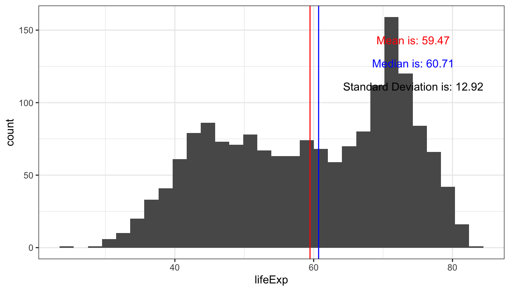
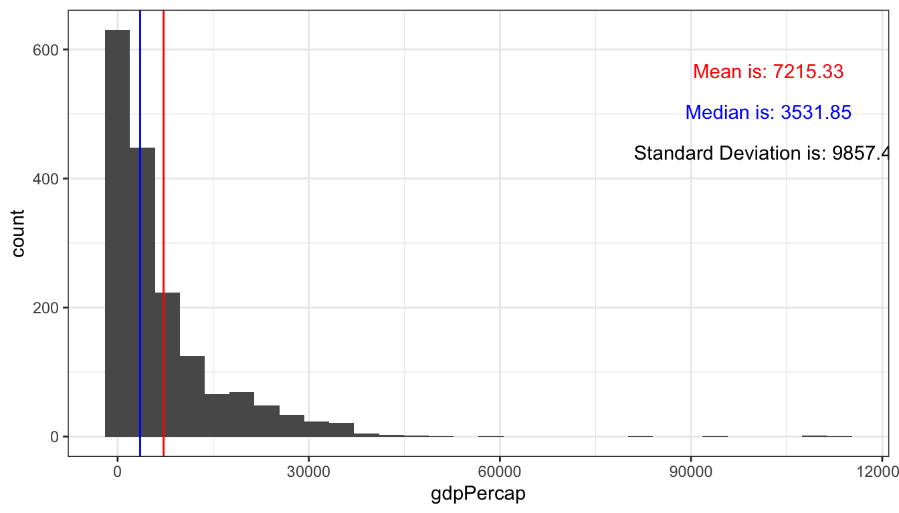

ggexpress-vignette.Rmdlibrary(ggexpress)When conducting Exploratory Data Analysis it is useful to plot the variables in the data to get an intial sense of the distribution and potential behaviour of the data. If the dataset contains many variables creating separate plots for each one could become tedious. This package automates the plot configuration process and generates basic graphics that summarize the data.
This package contains 4 functions; two for general purpose exploratory tasks and two that are more specific.
Creates a basic histogram that indicates the position of the mean and median and displays the standard deviation.
gghistCreates a scatterplot and calculates the correlation coefficient.
ggscatterCreates a Fourier transform plot.
fourier_transformConverts time series data into 4 subplots displaying the raw data, trend, seasonal and noise components.
ts_plotThe gapminder::gapminder dataset will be used to explore the basic functionality of gghist and ggscatter.
library(gapminder)
gapminder::gapminder
#> # A tibble: 1,704 x 6
#> country continent year lifeExp pop gdpPercap
#> <fct> <fct> <int> <dbl> <int> <dbl>
#> 1 Afghanistan Asia 1952 28.8 8425333 779.
#> 2 Afghanistan Asia 1957 30.3 9240934 821.
#> 3 Afghanistan Asia 1962 32.0 10267083 853.
#> 4 Afghanistan Asia 1967 34.0 11537966 836.
#> 5 Afghanistan Asia 1972 36.1 13079460 740.
#> 6 Afghanistan Asia 1977 38.4 14880372 786.
#> 7 Afghanistan Asia 1982 39.9 12881816 978.
#> 8 Afghanistan Asia 1987 40.8 13867957 852.
#> 9 Afghanistan Asia 1992 41.7 16317921 649.
#> 10 Afghanistan Asia 1997 41.8 22227415 635.
#> # … with 1,694 more rowsThis plot displays the position of the mean and median of life expectancy from the gapminder dataset. In addition, the plot also displays the value of the mean, median and standard deviation.
gghist(data = gapminder, variable = lifeExp)
#> `stat_bin()` using `bins = 30`. Pick better value with `binwidth`.
#> `stat_bin()` using `bins = 30`. Pick better value with `binwidth`.
gghist(data = gapminder, variable = gdpPercap)
#> `stat_bin()` using `bins = 30`. Pick better value with `binwidth`.
#> `stat_bin()` using `bins = 30`. Pick better value with `binwidth`.